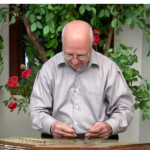

The Center for Iranian Music (CFIM) strives to preserve and promote Iranian music, including traditional music (the Dastgâh System), folk music (regional music of Iran), contemporary music, and commemorative and religious music.
// Learn more ...
Home
About
People
News & Events
Iranian Music
General History
Musical History
Concepts & Terminology
Performances & Research
Study Music in US
Persian
Donate
Contact
People
Directors
Reza Vali, Ph.D.
Bijan Elyaderani, M.D.
Zahra Mohebbi, Ph.D.
Advisory Board
Cyrus Forough
Ester Saghafi, MEd, MLS

Dariush Saghafi, M.D.
Behrouz Jamali
Dan Martin
Parviz Baghai, M.D.
Simin Yazdgerdi Curtis
Margaret Myers
Kayhan Kalhor